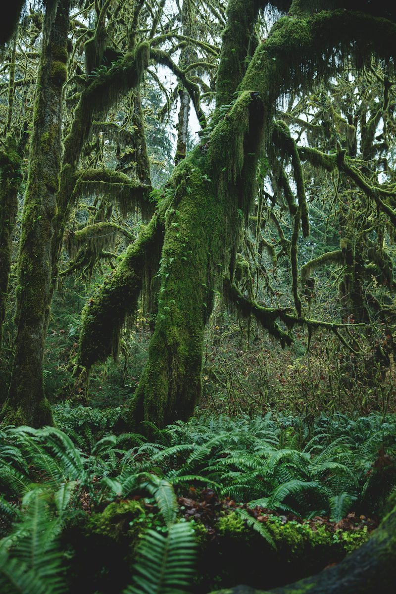

Stories
A collection of fiction, psychological curiosities, and people being people.

Stories · Essays · Other observations
A home for stories, essays, and the occasional observation about being alive. Written by Njeri of the Woods.
A collection of fiction, psychological curiosities, and people being people.
Personal essays, observations, and assorted thoughts.
I'm Njeri of the Woods, a writer interested in the strange, the ordinary, and the things people would rather not say aloud.